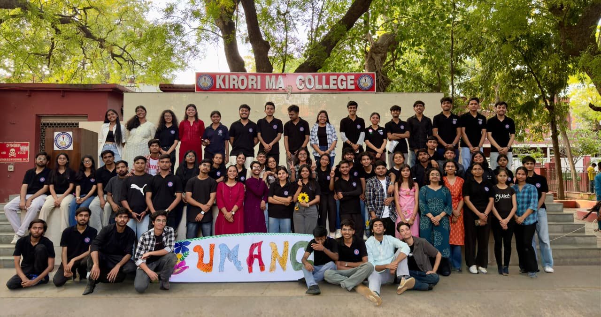
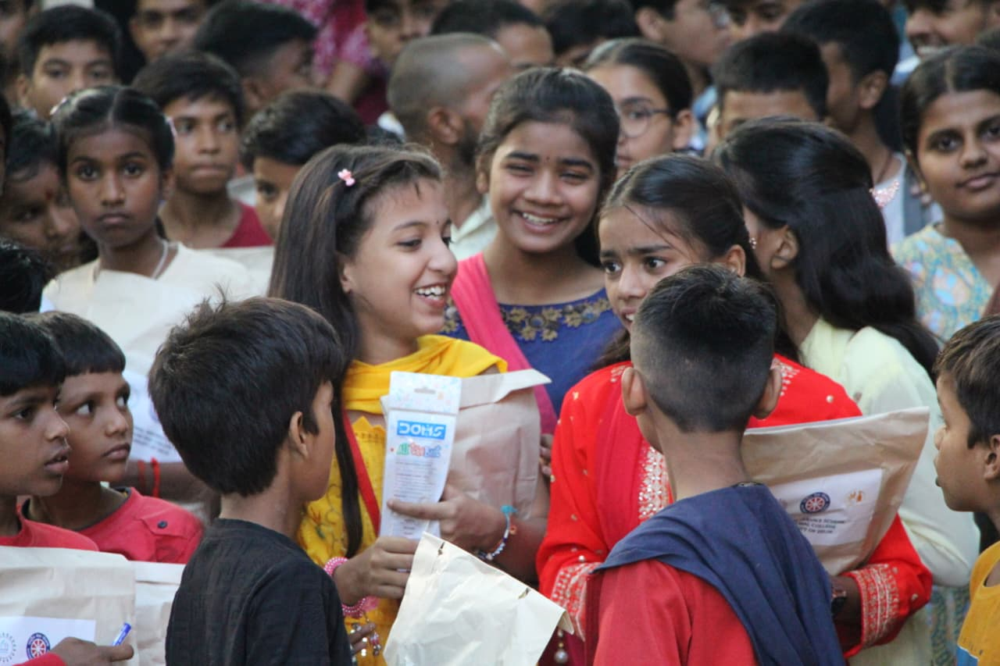
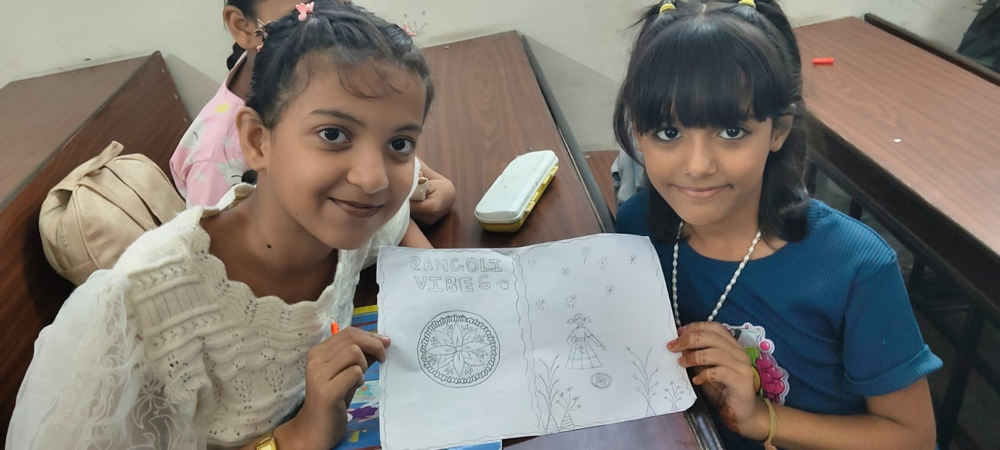
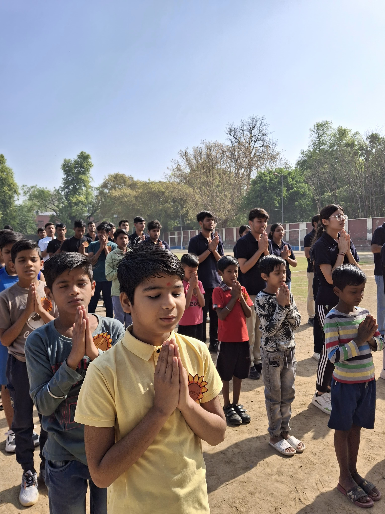
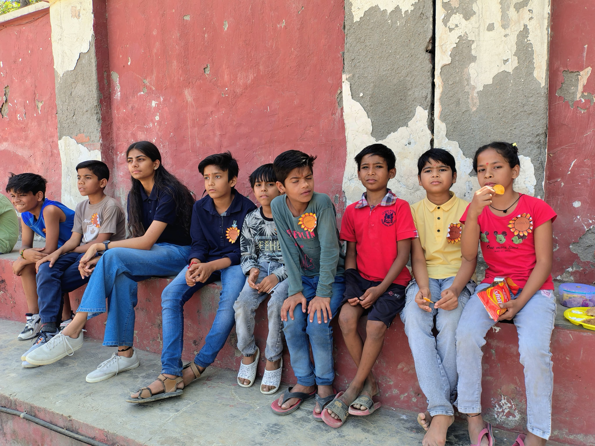
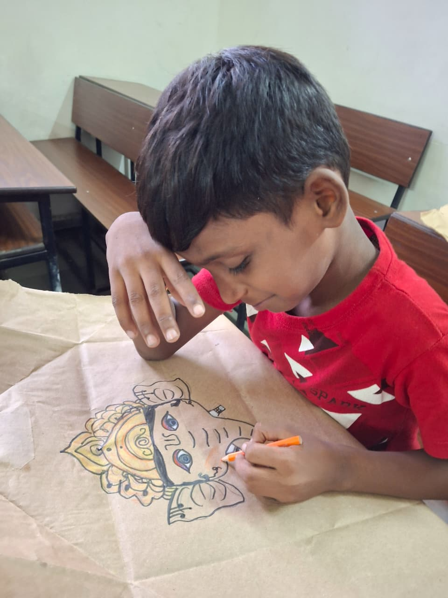
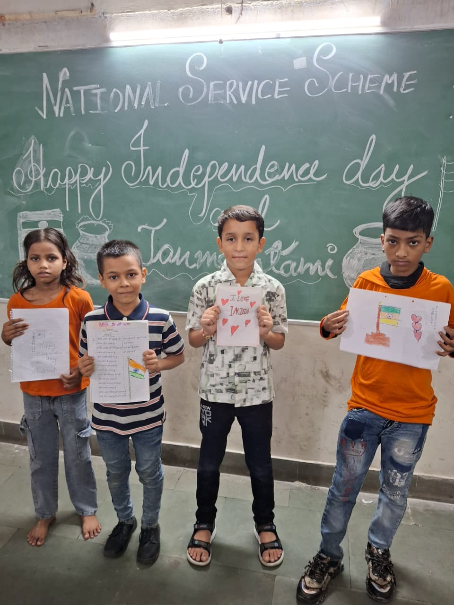
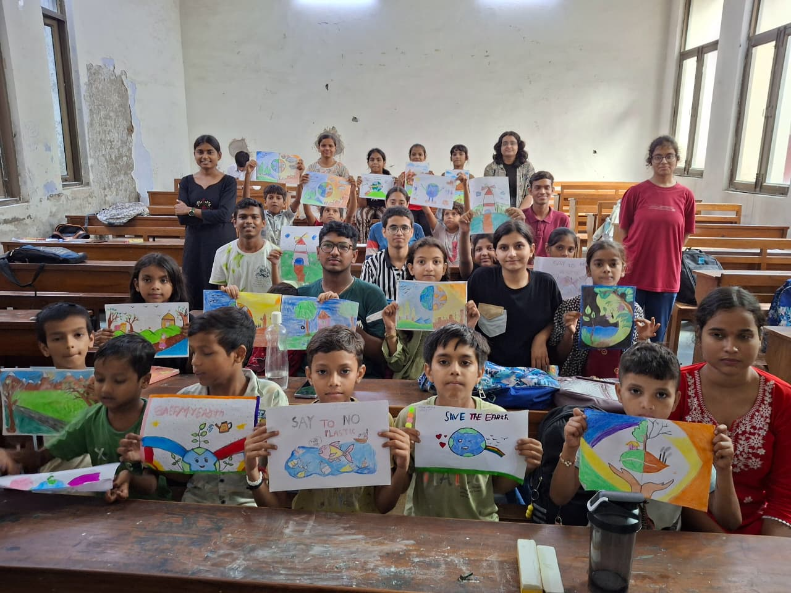
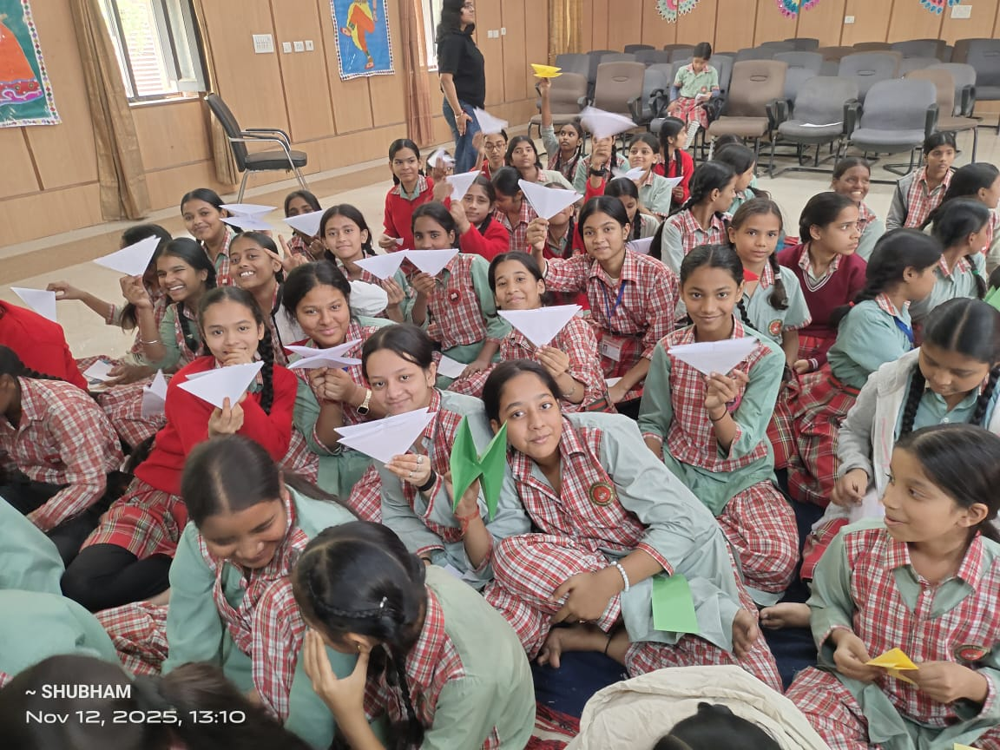
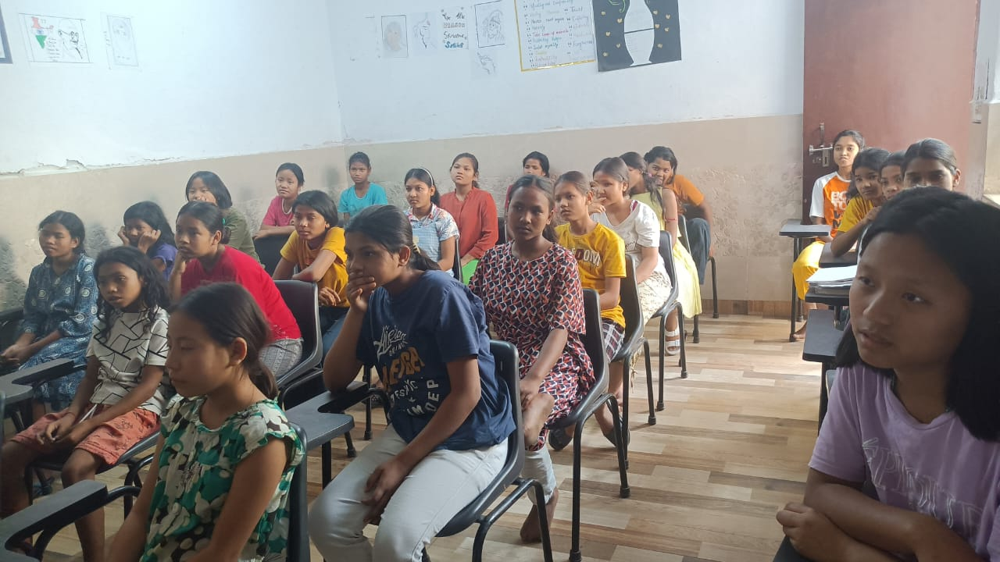

NSS KMC
FOUNDER'S DAY
A celebration of the journey and legacy of NSS KMC, honouring those who shaped its story and inspiring the generations who carry its spirit of service forward.
Learn MoreThe National Service Scheme of Kirori Mal College stands as a catalyst for meaningful social transformation. Rooted in the philosophy of "Not Me, But You", we empower young leaders to create lasting impact through community service, educational outreach, women's empowerment, environmental action, public health initiatives, and inclusive development.
3,000+ Lives Empowered
20+ Campaigns Every Year
SAHAS • SAHYOG • SAMARPAN
100+ Active
A message from the Principal of Kirori Mal College.
The National Service Scheme at Kirori Mal College stands as a testament to our unwavering commitment to holistic education and nation-building. It provides students with opportunities to develop not only academic excellence but also empathy, leadership, and social responsibility. Through transformative initiatives in education, women empowerment, environmental stewardship, health awareness, and community development, our volunteers continue to create meaningful and lasting impact. Their selfless dedication truly reflects the essence of the NSS motto, "Not Me, But You." I invite every student to become a part of this inspiring journey of service, where compassion meets action and young minds emerge as responsible citizens dedicated to shaping a better tomorrow.
— Prof. Dinesh Khattar, Principal, Kirori Mal College

Each One Teach One Campaign — NSS KMC
Established in 1969 by the Government of India, the National Service Scheme (NSS) is one of the country's largest youth development programmes, dedicated to shaping socially responsible citizens through meaningful community service. Guided by its enduring motto, "Not Me, But You," NSS inspires students to develop leadership, empathy, and a deep sense of civic responsibility.
As one of the pioneering NSS units of the University of Delhi, NSS Kirori Mal College proudly carries forward this legacy since 2013. Through flagship initiatives such as SAHYOG, SAHAS, environmental campaigns, health awareness drives, literacy programmes, and community outreach, we empower students to transform compassion into action.
The National Service Scheme at Kirori Mal College was founded in 2013, but its spirit began much earlier—with a small group of students who chose to respond to the realities they saw around them. Among them was Aditya, a student who began teaching children gathered at Hanuman Mandir, where a simple act of stepping forward gradually grew into a larger effort to support their education.
They began with what they had: time, a blackboard, and a willingness to show up. What started as small teaching sessions gradually became a sustained commitment to education and community engagement. There was no elaborate infrastructure or certainty of where the journey would lead—only the conviction that meaningful change begins when someone chooses to act.
That early effort grew into SAHYOG,NSS KMC’s education initiative rooted in the philosophy of Each One Teach One. As volunteers engaged more deeply with the community, they recognised other pressing concerns, giving rise to SAHAS, the women empowerment initiative, and eventually, SAMARPANbringing together diverse efforts in community welfare, environmental action, and compassionate service.
Today, NSS KMC carries this legacy forward through a growing community of student volunteers and a wide range of initiatives across Delhi. The scale may have changed since 2013, but the principle remains the same: when something needs to be done, we choose to show up.
All of this, because a few students decided that "someone should do something" meant them.
NSS Kirori Mal College · Since 2013






A decade of student-led service, condensed into the numbers and credentials that define us.
2013
Unit Established
0+
Active Volunteers
0+
Lives Empowered
0+
Campaigns Each Year
SAHAS · SAHYOG · SAMARPAN
Three Flagship Wings
University of Delhi
Recognised NSS Unit
Annual Reports & Magazines
Published Every Year
"Not Me, But You"
The NSS Motto
Every campaign we run is measured against these two statements.
Project SAHYOG, through its “Each One Teach One” initiative, works towards making education accessible and meaningful for children from underserved communities. Alongside regular teaching sessions, the project focuses on nurturing confidence, creativity and essential life skills, while encouraging volunteers to contribute with empathy and social responsibility. Project SAHAS works towards women’s empowerment by promoting awareness of equality, rights and opportunities. Through interactive sessions and community initiatives, it encourages women to recognise their potential, voice their concerns and participate actively in creating positive social change.
Guided by the motto “Not Me But You,” NSS KMC places collective welfare and social responsibility at the heart of its work. “Sahas se Sahyog Karein” reflects our belief in combining courage with collaboration. Moving forward, the unit aims to expand its outreach, deepen community engagement and contribute towards a more inclusive and equitable society.
Deliver consistent, year-round academic mentoring to children from underserved communities rather than one-off charity visits.
Normalise conversations around menstrual health, hygiene and women's wellbeing, and make safe products and accurate information accessible.
Build genuine partnerships with local communities so that programmes are shaped with them, not designed for them from a distance.
Develop leadership, empathy and organisational skill in every volunteer, so that service becomes a lifelong habit rather than a college credit.
Support public health and environmental action on campus and around it — blood donation, sanitation, plantation drives and awareness campaigns.
Document and publish our work honestly each year, so that impact can be checked by anyone who cares to look.
Our Goal for 2030
To reach 10,000+ lives across Delhi through sustained programmes in education, empowerment, health, and community development and build a legacy of initiatives that continue to create impact for years to come.
Our motto is more than a guiding phrase—it shapes how we serve, how we engage with communities, and how we approach every responsibility entrusted to us.
We serve because meaningful work demands commitment, consistency, and responsibility—not recognition. Every initiative begins with the belief that service is measured by the impact we create and the commitment we sustain.
We believe in creating meaningful opportunities with respect, empathy, and inclusion. Our work seeks to empower communities, uphold dignity, and ensure that every individual is treated with compassion.
We value honesty, responsible action, and accountability in everything we undertake. Our initiatives are guided by openness and a commitment to ensure that our work creates genuine, measurable impact.
We believe service belongs to everyone. NSS KMC welcomes diverse voices and works with communities without discrimination or conditions. Our commitment to inclusion ensures that every individual is treated with equal dignity, respect, and opportunity to participate.
We place students at the heart of service, enabling them to take initiative while institutional guidance and support strengthen their efforts. Together, this creates a culture where young people learn to lead with purpose, responsibility, and empathy.

"Not Me, But You."
The NSS motto, since 1969.
Through SAHAS and SAHYOG (and SAMARPAN), we empower communities, nurture compassionate leaders, and create meaningful social change.
Emerging from the remarkable journey of Project SAHYOG, SAHAS is the dedicated Women Empowerment Initiative of NSS Kirori Mal College. Guided by the vision of building an equitable and inclusive society, SAHAS works with women and adolescent girls through menstrual hygiene awareness, health education, leadership programmes, skill development workshops, gender sensitization, and community engagement. By fostering dignity, confidence, and equal opportunities, the initiative empowers women not only to transform their own lives but also to inspire meaningful change within their families, communities, and society at large.
Test your knowledge on menstrual health, hygiene myths, and women empowerment. Challenge yourself and see where you stand!

Breaking taboos through health education, awareness campaigns, and access to essential menstrual hygiene resources.

Equipping women with confidence, practical skills, and opportunities to lead meaningful social change.

Legal awareness and rights seminars conducted for women in marginalized communities.

Gender-sensitization outreach and dialogue that brings families and communities into the conversation.
Our work extends across four interconnected areas and each reflecting our commitment to education, empowerment, community well-being, and responsible citizenship. Together, they shape how NSS KMC turns the spirit of service into sustained action.
Through regular academic mentoring, digital literacy, and holistic learning, we help children build strong foundations for the future. Beyond textbooks, SAHYOG nurtures confidence, creativity, life skills, and the belief that every child deserves the opportunity to learn, grow, and realise their potential.
Promoting menstrual health, dignity, and gender awareness through hygiene education, access to essential resources, gender-sensitisation, and confidence-building initiatives for women, girls, and the wider community.
Strengthening community well-being through blood donation drives, health awareness and counselling, sanitation initiatives, and skill-building programmes that connect communities with sustained support and opportunities.
Promoting environmental stewardship and responsible citizenship through plantation drives, cleanliness initiatives, waste-segregation awareness, and road- and cyber-safety campaigns encouraging communities to take collective responsibility for the spaces they share.
Beyond our year-round initiatives, these flagship events celebrate our values of service, leadership, creativity and community bringing volunteers and the wider KMC community together.
A celebration of the journey and legacy of NSS KMC, honouring those who shaped its story and inspiring the generations who carry its spirit of service forward.
Learn More
Celebrating the bonds that SAHYOG nurtures through learning, friendship, joy and the shared journey of growing together.
Learn More
Our annual flagship celebration of creativity, culture and community, bringing students together through a vibrant celebration of talent, participation and expression.
Learn More
A celebration of enthusiasm, expression and collective spirit, creating a space where volunteers come together to participate, connect and celebrate.
Learn More
A platform for meaningful conversations on women's leadership, dignity and empowerment, bringing together voices that inspire change.
Learn More
Celebrating courage, confidence and empowerment, SAHAS Day brings together voices, stories and experiences that inspire women to be seen, heard and valued.
Learn MoreShort, high-intensity drives that sit alongside our year-round programmes.

An interactive engagement introducing students to the Constitution, civic values and their responsibilities as citizens.

A meaningful celebration with SAHYOG students centred on the significance of Christmas, gratitude, goodwill and sharing.
An EOTO session commemorating Swami Vivekananda’s birth anniversary and encouraging students to reflect on his legacy and their role in society.
NSS KMC participated in the University of Delhi’s Drug-Free Campus Campaign, promoting awareness about substance abuse and responsible lifestyles.
An interactive EOTO session introducing students to the cultural significance of Lohri through discussion and participation.
Monsoon plantation drives, with volunteers assigned to water what they plant.
Online-fraud and digital-safety sessions for students and senior citizens.
Street campaigns on helmet use, pedestrian rights and safe crossings.
Textbook and stationery drives timed to the start of the school year.
The seven-day residential camp — our most intensive week of the year.
We are a college NSS unit, not a national agency. We will not solve these numbers. But every child we keep in school and every girl who stops missing a week of class each month is one line item moved in the right direction — and we would rather move a few than admire the problem.
0%
of adolescent girls in India knew what menstruation was before their first period.
van Eijk et al., 2016
0 days
of school missed each month, on average, by girls unable to manage their periods at school.
Dasra, Dignity for Her, 2015
0M
girls a year are estimated to leave school for want of menstrual hygiene facilities — a widely cited figure, and a contested one.
Dasra, Spot On!, 2014
0%
national dropout rate at the secondary school level, across all students.
UDISE+, 2019–20
A note on the third figure: the 23 million estimate originates in Dasra's 2014 Spot On! report and is repeated almost everywhere, but the same body of research is also reported as 23 per cent of girls dropping out on reaching puberty, and official UDISE+ dropout data tells a different story again. We cite it because it is the number the sector uses — not because the evidence behind it is settled.
Large programmes reach scale; student volunteers reach the last hundred metres. We live in the same city as the families we work with, we return every week of the academic year, and we are young enough that a fourteen-year-old will actually ask us the question she is too embarrassed to ask anyone else. That proximity is the one advantage we have, and it is the one we build everything on.
This is the logic every NSS KMC programme is built on. If a campaign cannot be placed on this chain — from what we put in, to what actually changes — we do not run it.
Mid-Term · 2027
Every SAHYOG child retained in school, and menstrual health sessions in 25 partner schools.
Long-Term · 2030
10,000 children and women reached, with community volunteers running the programmes themselves.
Inputs
A hundred-plus trained student volunteers, college infrastructure and faculty guidance, partner clinics and NGOs, donated materials, and a fixed weekly time commitment from every active volunteer.
Activities
Weekly mentoring classes, menstrual health and gender-sensitisation workshops, health and blood donation camps, skill and livelihood training, and environmental and civic campaigns.
Outputs
Children tutored across a full academic year, girls and women reached with accurate health information and safe products, units of blood collected, people screened at camps, and volunteers trained to lead.
Outcomes
Children stay in school and move up a grade. Girls stop missing a week of class every month. Families treat a health check as normal rather than an emergency. Volunteers graduate having learned to run something real.
Impact
Communities where education is expected rather than exceptional, where menstruation is discussed without shame, and where the people once served are the ones running the programme — which is the only ending that counts as success.
Attendance and progress are tracked per child, not per event. Workshop reach is recorded by school and cohort. Every figure that appears in our annual report can be traced back to a register a volunteer actually filled in.
Read our annual reportsSelect an event to view its photos. The gallery loads images from Google Drive via a secure Apps Script endpoint.
NSS KMC works through community-led initiatives focused on education, women’s empowerment, environmental sustainability, health awareness, and social welfare. Our programmes are designed to respond to community needs and create meaningful, lasting impact.
Lives Positively Impacted
Children Mainstreamed
Field Hours Served
Community Camps
Every alumnus carries a story shaped by service. Their journeys stand as a testament to the enduring values of leadership, empathy, integrity, and social responsibility cultivated at NSS Kirori Mal College.
Program Officers, Co-Conveners, Council members, and Coordinators who lead NSS KMC operations.
The Program Officer coordinates all NSS KMC strategic and field operations.
Download our magazines, annual reports and audits.
Latest annual reports (showing 3 most recent)
The latest magazine issues from NSS KMC (showing 3 most recent)
Have queries on physical campaign schedules or need validation files of program impact audits? Drop us an official communication.
NSS Room, Kirori Mal College, North Campus, University of Delhi, Delhi - 110007